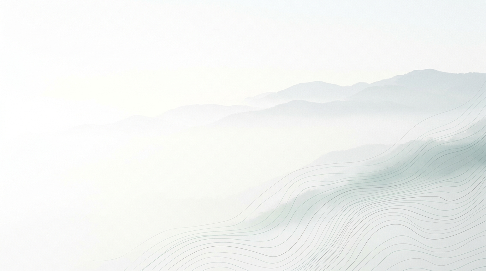
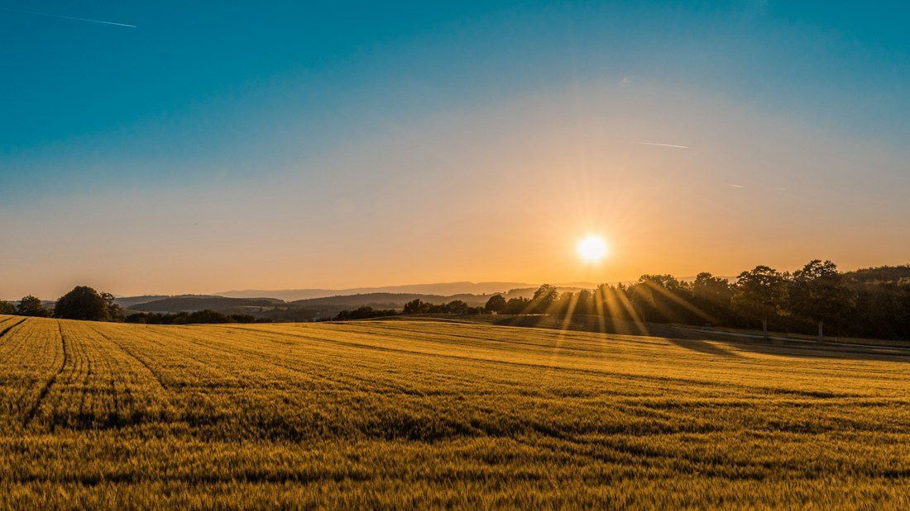
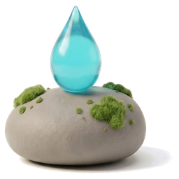
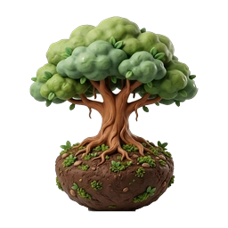
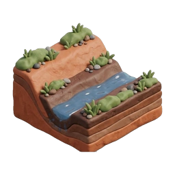
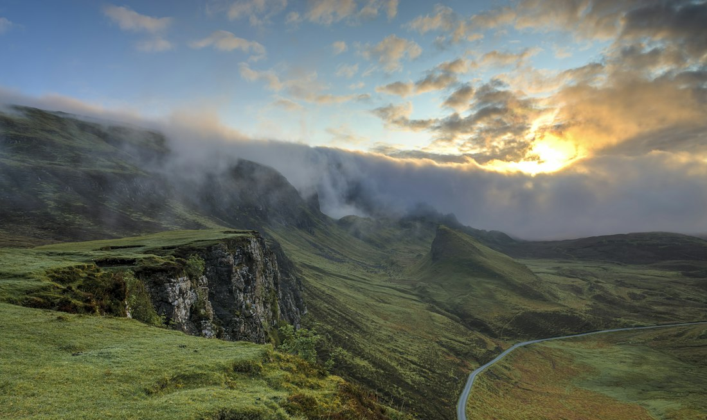
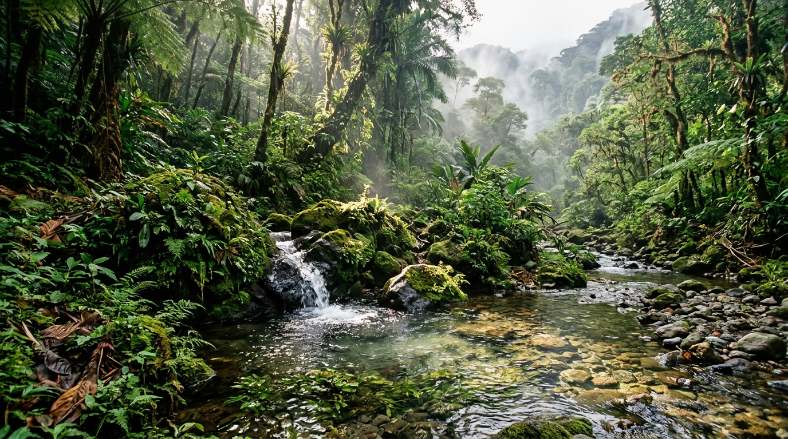
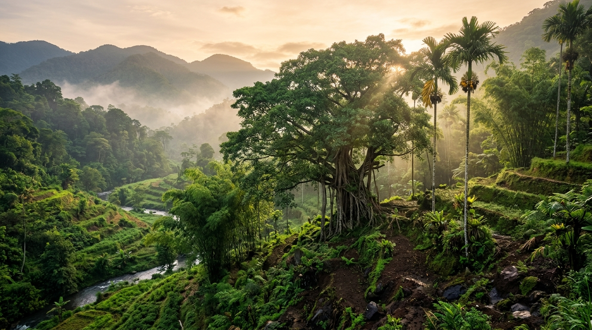
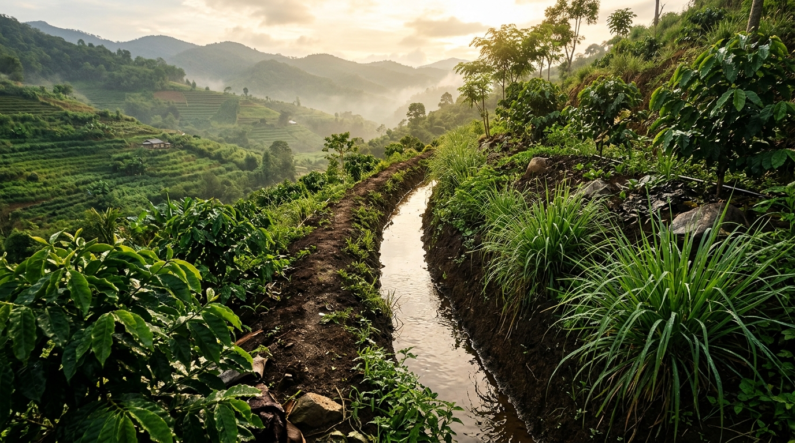
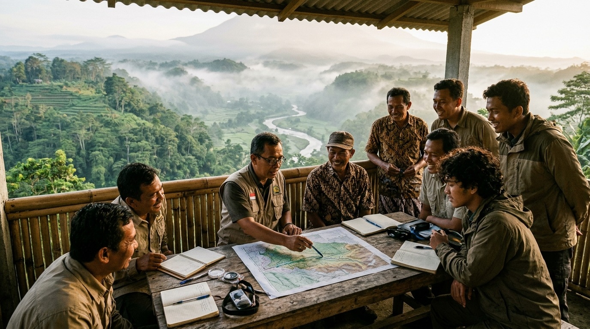

Laporan Terverifikasi
48 laporan
Validasi survei, restorasi, tanam, dan rorak.

Platform Peta & Konservasi Mata Air Indonesia
Dokumentasi debit mata air, pemetaan grid spasial 5 km, dan inisiatif parit resapan rorak tanah di seluruh penjuru Indonesia, dirintis dari laboratorium hidrologi lereng pegunungan Jawa Tengah.

01 · Peta mata air terpadu
Jelajahi mata air baseline resmi (RISPAM & Pemda) serta titik laporan aksi komunitas. Koordinat publik disamarkan dalam radius 5 km untuk melindungi sumber air.
Visi hulu ke hilir
Saat debit gunung menyusut, air bersih desa terancam. BelikHub memetakan mata air kritis, merawat pohon hulu, dan menggali rorak resapan bersama warga.

Dampak nyata · Transparansi capaian
Ringkasan capaian restorasi, metrik baseline, dan kontribusi relawan di seluruh wilayah dampingan.
Laporan Terverifikasi
48 laporan
Validasi survei, restorasi, tanam, dan rorak.
Titik Restorasi

16 belik
Pembersihan sedimen & perbaikan springbox.
Pohon Ditanam

1.800 pohon
Bibit endemik pengikat air di area springshed.
Rorak Digali

142 unit
Menahan limpasan hujan masuk ke akuifer tanah.
Alur Data Hidrologi
Memuat data capaian…
Standar audit & keselarasan target SDG
03 · Aktivitas komunitas
Kirim laporan dari lapangan, kumpulkan poin relawan, dan bantu tim memantau kondisi belik secara berkelanjutan.

04 · Gerakan konservasi
Rorak adalah teknik konservasi tanah dan air: parit resapan penahan limpasan di lereng hulu agar meresap kembali mengisi cadangan akuifer mata air. Diinisiasi gotong royong warga, didukung padat karya tani lokal, dan diverifikasi berbasis data spasial.
Aksi Komunitas Berjalan · Terbuka
Sabuk resapan air hujan di perbukitan tangkapan air untuk memulihkan kontinuitas aliran mata air Belik Soka.
05 · Pusat belajar praktis
Panduan teknis praktis bersama praktisi hidrologi dan masyarakat adat penjaga sumber air.

Uji debit volumetrik, kejernihan air, dan tata cara adat survei di hulu.

Pemilihan spesies akar dalam beringin, aren, dan bambu di zona imbuhan.

Garis kontur A-frame, penggalian lubang baku, dan perawatan pra-hujan.
Ekspedisi · Batang
Bagaimana 200 sumur resapan dan 2.000 pohon menaikkan debit mata air +9,57% di lereng Dieng.
Pemulihan · Bandar
Kilas balik kekeringan 12 bulan di Desa Wonomerto hingga aliran kembali melayani 65 keluarga.
Panduan · Hidrologi
Rincian teknis mengapa rorak kontur padat karya efektif menahan erosi dan meresapkan jutaan liter air ke tanah.
Kajian · Lereng Jawa
Analisis koefisien infiltrasi tanah di lahan terbuka serta langkah perbaikannya.
Sabtu · 16 Nov 2026
Titik kumpul Balai Desa Bismo, Kec. Blado, Batang · pukul 07.30 WIB.
Minggu · 24 Nov 2026
Titik kumpul Mata Air Wonomerto, Kec. Bandar · pukul 08.00 WIB.
Sabtu · 30 Nov 2026
Titik kumpul Desa Tambakboyo, Kec. Reban · pukul 07.00 WIB.
Ringkasan naskah dokumenter tersedia melalui tombol bacaan di samping.
Dokumenter 2026
Sinergi warga desa, pemuda, dan tetua adat merestorasi mata air dengan konservasi rorak sederhana berbiaya rendah.
Pertanyaan umum
Pelindungan koordinat 5 km, poin relawan, dan pengajuan restorasi desa.
Koordinat GPS asli dienkripsi agar mata air desa terlindung dari eksploitasi berlebih.
Survei 100 poin, tanam 100 poin, rorak 500 poin, restorasi 1.000 poin. Raih 20.000 poin untuk pengajuan restorasi desa.
Tidak. BelikHub adalah platform teknologi komunitas. Rorak adalah gerakan konservasi tanah dan air yang dikerjakan gotong royong serta padat karya warga lokal. Dukungan dana 100% disalurkan sebagai upah kerja tenaga penggali desa bersama pendampingan teknis kontur.
Instansi mengajukan kolaborasi data historis lewat formulir kemitraan BelikHub di bawah.
06 · Kolaborasi institusi
Bekerja sama dengan pemerintah daerah, BUMDes, PDAM, perguruan tinggi, dan korporasi untuk program CSR pemulihan mata air di berbagai DAS Indonesia.
